Side pad mount: front vs side
Head to head first; the earlier exhaust-tip look study and lock sketches are collapsed at the bottom.
Front vs side: head to head
Both options use the real Onshape arm, carrier, depth piece and pad, unchanged on the outside, and keep every r5b feature: 4 carriers per arm length, the drop-in button with its split orange tell sleeve, one-way barb and 8-coil spring in a counterbore, the deep catch (4.0 travel, hard stop, 0.8 crown, 6° face, click entry), the 22 × 31 arm, the 16 × 24 tenon with 4 Ø2 × 29 carbon pins (the reprintable fuse), the 27 × 48 R10 foot, the child-side pad screw with its dovetail snap stop, and R ≥ 1.5 rounds. There is no Ø6 rod. Only the socket end and the inside differ.
F · front edge: tall tongue (80 mm, R2 root, Ø2 corner rods)
S · side: twist-in (bayonet), stadium "exhaust" mouth
One camera drives both panes. Slider: 0 → 1 connects, 1 → 2 releases. Cutaway: F is cut level through the tongue, and S is cut through the lug chambers, seen from the parent side. The red arrow shows S's turn. The ejector spring (F), and the return spring with its helix (S), are drawn as mock parts. Approximate: the S socket end (cheek, collar, plug, lugs) comes from a 0.25 mm distance field, and the F nose and tongue are built from the as-built r5b parts, stretched to 80 mm.
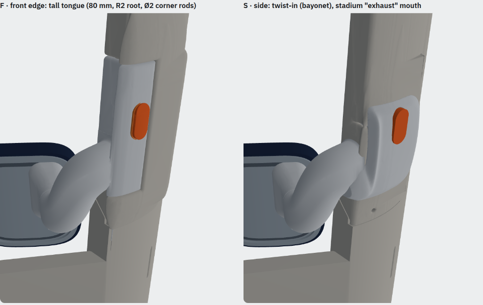
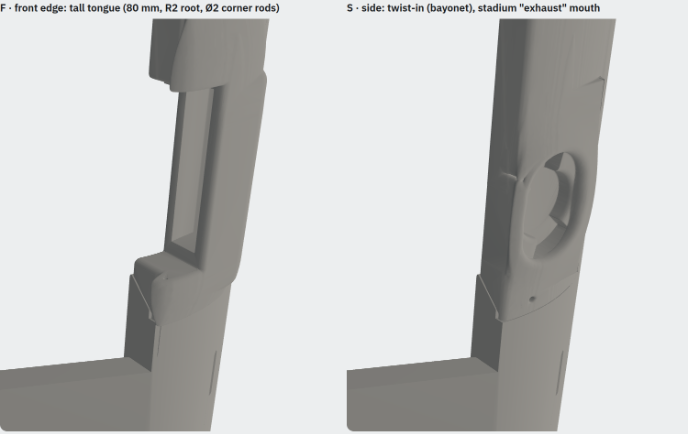
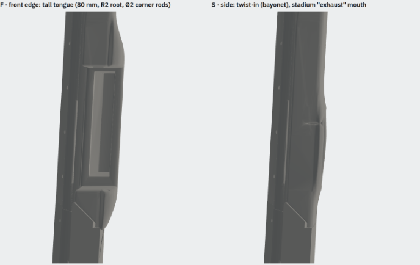
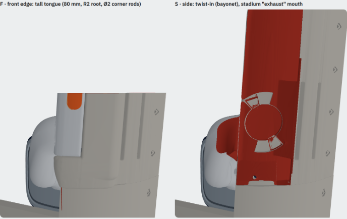
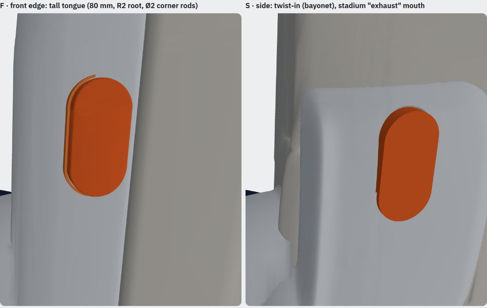
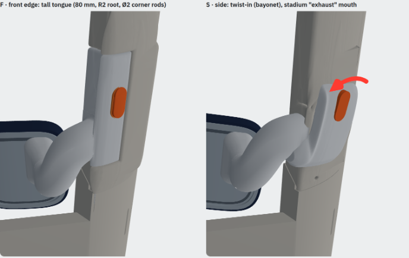
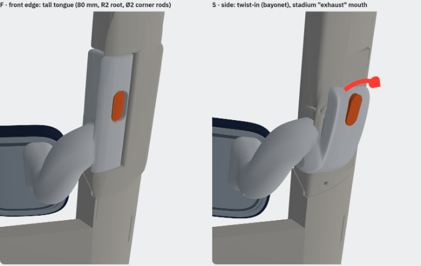
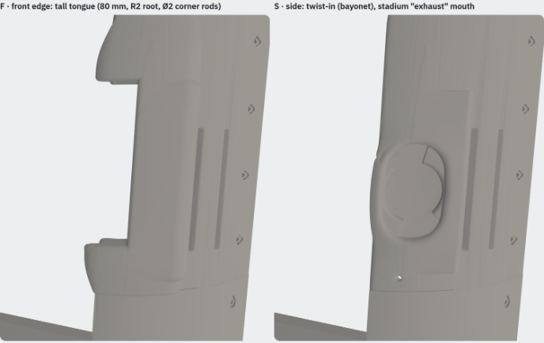
Guidance: no hunting for the slot
| F · front edge | S · side twist-in | |
|---|---|---|
| Lead-in | the notch rim and the slot mouth are rolled (R ≈ 1.5) and the tongue's tapered rear leads in | the stadium mouth is rolled (R ≈ 2.5), with a flare into the Ø33 bore |
| Keyed, one way in | the tongue's tapered rear (9 → 2.2) only fits the slot one way up; the nose fills the notch | the lugs only pass the two ends of the mouth, with the pad held turned 30° |
| Self-centring | the taper and the nose cheeks pull the tongue to the middle as it slides back | the round plug centres in the bore before the lugs reach the ledges |
| Finishing move | a straight push back; the 45° back of the catch cams in and clicks | a helical ramp at the chamber entry turns the plug as it is pushed, so the turn "falls" into the click |
Strength (same contact model for both; ESTIMATES)
This is the CAD agent's r5b contact model (sf_r5b.py / loads.py: rigid kit on Winkler springs, k 400 N/mm³, all 8 arm, kit and pad settings, seated) at 300 N. "First gives" = 300 N × the lowest safety factor, using PETG allowables of 40 / 22 / 25 MPa (along layers / shear / bearing). The arm (1.90 / 1.24) and the tenon fuse (2.87 / 1.16) are the r5b values for both options. Red = the wing gives (not reprintable); grey = a reprintable kit part. Script: exhaust/h2h_strength.py.
| F · tall tongue 80 + rods | F + Ø8 prongs | S · twist-in (best that fits) | S + prongs | |
|---|---|---|---|---|
| First gives, lean (pad centre) | 554 N tongue (kit) | 570 N arm (kit) | 128 N lugs (kit) | not possible: the plug turns as it seats, so straight prongs can't enter the wing |
| First gives, corner knock | 348 N tenon fuse (kit) | 348 N tenon fuse (kit) | 90 N lugs (kit) | |
| Wing starts to dent at (lean / corner) | 716 / 488 N | 812 / 560 N | 393 / 273 N (lug ledges, button notch) | |
| Latch or lug load at 300 N (lean / corner) | catch 557 / 749 N on 2.4 × 32 → bearing SF 3.5 / 2.6 | catch 257 / 319 N | lugs 1000 / 1420 N each; button catch 528 / 771 N (SF 1.4 / 0.9) | |
| Without the rods (F) / notes | F 80 without rods: 529 / 348 N, wing 601 / 432 N. F 90 + rods: 546 / 348 N, wing 802 / 547 N. | Wing tip depth and slit S1 cap the plug at Ø33 (front wall 4.8, 4.5 to S1). A Ø40 plug would only reach 356 / 254 N, and it does not fit. The cheek round the front edge is modelled 14 × 62 mm (12 mm: 462 / 313 N). The modelled wrap keeps below the plug axis so the kit can turn; that makes the real section smaller, so S's cheek figure is optimistic. | ||
| Engaged depth | tongue 24.5 deep × 80 tall (nose 90 tall) | same + prongs 18 / 30 deep | plug 14 deep (d′ 5 → 19), lugs 8.5 thick behind 5 mm ledges | |
| Parent's press force | ≈ 9–10 N (r5b spring 4.9 → 8.9 N, + ≈ 1 N ejector friction) | ≈ 13 N (same button, + friction from the return-spring torque on the catch) | ||
| Push in / turn | ≈ 10–15 N push back (catch ramp + ejector spring) | ≈ 15–20 N push; the helix does the 30° turn (≈ 0.3 N·m: the pad swings, no wrist twist needed) | ||
| Eject travel, release feel | 3 mm nudge: press, it lets go and hangs, pull forward | turns back 30° and pops 4 mm: press, it unwinds, pull out | ||
Pros and cons
| F · front edge, tall tongue | S · side twist-in | |
|---|---|---|
| Elegance (one flowing piece of the chair?) | Yes. The front edge swells smoothly (C2 fades over 45 mm) into a nose band, and the nose is the front of that swell, so connected it reads as one piece with hairline seams. Kit off, the 90 mm notch is a clean rolled-rim cut, but it is still a notch. | Kit off, it's the nicest: a round exhaust swell with a stadium mouth, though the bayonet chambers show inside. Kit on, the 14 mm wrap round the front edge (needed for strength) makes a thick pad on the face. The wrap stops below the axis so it can turn, so its outline is uneven. |
| Looks, kit on | the nose fills the swell flush; hairline seams | a smooth but thick mound on the parent face |
| Looks, kit off | a 90 mm notch with a slot in the front edge (rounded, but visible) | the front edge stays whole; a neat stadium mouth on the parent side |
| Looks, from the front | the notch faces you | only the swell |
| Ease of use | one straight push back and a click; one hand | push and let the pad swing 30°; the pad must start tilted, near the arm rest |
| Guidance and feel | long tapered tongue: it finds the slot and centres itself | keyed lugs and a helical ramp, but you must line up the angle before the lugs drop in |
| Release feel | press: a 3 mm nudge, then pull | press: it unwinds and pops, then pull |
| Strength | the kit gives first (fuse 348 N, tongue 554 N); the wing holds to 488–716 N | the lugs give at 90–128 N; the wing dents from 273 N |
| Print complexity | as r5b: an open slot, printable as built | two sealed undercut lug chambers in the wing (bridged roofs), a helical ramp, and a torsion spring |
| Change from the as-built CAD | small: the same parts, taller (tongue 32 → 80, nose up to z 297), + Ø2 rods and an ejector spring | large: a new socket end (14 mm cheek, collar, plug, lugs) and a new wing tip |
Look verdicts. F: deliberate and calm. The swell gives the front edge a soft, solid nose in the family of the headrest and pommel. Its weak spot is the open notch when the kit is off. S: the most elegant empty wing, but a bulkier, less resolved part once connected.
Recommendation: F, the tall front-edge tongue (80 mm, R2 root, Ø2 corner rods, optional prongs). S looks cleaner but isn't as good. It fits only a Ø33 plug in the wing tip, so its lugs give at about a quarter of F's load and the wing dents before the fuse. F protects the wing.
Self-review (three passes) and what changed
| Pass | Found | Fixed / remaining |
|---|---|---|
| Designer: looks and family fit | F's nose read as a box: it filled the old square r5 slab, and a hump sat above it. A strip of the tongue showed through a thin skin, and the as-built arm's old flat nose face stood 2.7 mm proud of the new rounded nose, reading as a rib below the button. S had a boxy collar and a slab-like cheek. | Fixed: F's slab is now one C2 swell along the front edge (long fades, plateau over the tongue). The nose is the front of that swell, with R ≈ 1.5 rims and hairline seams. The arm keeps its outside, but its old nose face is replaced by the new nose. S's collar and cheek are now one smooth mound. Remaining: F's notch is open with the kit off (the r5b blank cap would close it). S stays bulky with the kit on, and its outline is uneven because the front wrap stays below the axis so it can turn. The upper lug chamber sweeps to within about 3 mm of the front face, which leaves a thin wall and a faint crease at the mouth's front. Pulling it back means a smaller turn or smaller lugs, and S is already the weaker option. |
| Mechanical: guidance, latch, eject, tolerances, assembly | F keeps the r5b latch unchanged, moved up 33 mm; the button still drops in from the nose top, hidden in the notch. S needs the whole pad and arm to swing 30°, a sealed undercut chamber in the wing, a re-oriented button, a torsion spring and a helix. | F: the ejector is a small steel spring (≈ 3 N, 3 mm) at the slot's rear wall, a mock here. S: the pad's 30° sweep near the arm rest is not clash-checked. Its turn-back catch carries 528 / 771 N at 300 N, over the r5b catch's capacity at the corner (SF 0.9). |
| Strength: same model, honest SFs | Both use the same contact solver, loads and zero gaps, with the r5b arm and fuse. F's prongs are contact patches in the wing bores. S can't take prongs. S's lugs and cheek are checked with hand formulas. | S's cheek figure is optimistic (the wrap is smaller than modelled). check_features.py confirms slit S1 and the z 186 hole are still open in all three wings. Everything here is an estimate to confirm with the latch coupon. |
How click-and-pop connections work (and our tolerances)
Camera lens bayonet
A spring pin drops into a hole at the end of the turn. The button pulls the pin back, so release is "hold the button and turn back". We borrow: lugs carry the load, a spring catch only stops the turn back, and release takes two actions.
Quad Lock phone mount
Push in at an angle and twist to lock. Press the collar or lever and twist back to release. Their "dual-stage lock" is built for vibration and impacts. We borrow: the start-turned-then-twist motion (S) and a release you can't trigger by accident.
ISOFIX child-seat connector
Push straight in: an audible click and a red/green indicator. Press the button to release. We borrow: the straight push and click (F), and a visible tell, which is our orange sleeve going flush.
| Our design, mapped | F | S |
|---|---|---|
| Lead-in and guides | rolled, flared notch and slot mouth; tapered tongue | rolled mouth, bore flare, keyed lugs, helical ramp |
| What carries the load | the tongue in the slot walls (80 tall) | two lugs behind wing ledges |
| Spring | steel, not printed: printed spring arms creep. Button spring SS304 OD 6 × 0.55, 8 coils (r5b); ejector (F) and return torsion spring (S) also steel. | |
| Button | retracts the deep catch from its groove | retracts the catch from its notch, freeing the turn back |
| Eject nudge | 3 mm, from a small compression spring at the tongue tip | 4 mm, from the return spring through the helix |
Trade-off: an auto-eject is convenient, but then an accidental press unlatches. So the eject stays a small nudge of a few mm. It unlatches without dropping the arm: the arm still hangs on the tongue or plug until the parent pulls. Under load (a child leaning), friction on the catch is much larger than the spring, so it won't pop. Who can reach the button: both buttons are on the parent (outer) side of the wing. The child sits inboard, behind the wing and the pad, and can't reach F's button on the nose's outer face or S's button on the collar. F's nose sits at the front edge, so it is easier to reach round to than S's collar (check on the chair).
| Tolerance (PETG, FDM; starting points, confirm with a printed coupon) | Typical | F (planned) | S (planned) |
|---|---|---|---|
| Sliding fit, per side | 0.2–0.3 mm | tongue in slot 0.2; nose in notch 0.25 | plug in bore 0.3 |
| Lug or tongue to ledge, running gap | 0.2–0.4 mm | tongue top and bottom 0.2 | lug to ledge 0.3 axial, 1.0 angular |
| Click (snap) interference, with a ramp | ≈ 0.5–1 mm | deep catch 2.4 reach (spring-driven, not a flexing snap), 45° entry ramp, 6° locking face | same catch, in the collar |
| Fillets at roots that flex or carry load | generous | tongue outer root R2, slot mouth R4 | lug roots R1.5, lip R2.5 |
| Print orientation | loads and flex not across layers | as r5b: tongue layers along its length | plug axis horizontal, so the lugs are not across layers |
| Coupon | ±0.05–0.1 mm steps | latch coupon test: press 8–12 N, insertion ≤ 25 N, pull-out ≥ 600 N, 200 cycles, wobble ≤ 0.5 mm at 60 mm; slot widths in ±0.1 steps | |
Sources: QIDI snap-fit clearance guide · OpenAT design guide: snap fits · Slant 3D: tolerances (video) · Connecting 3D-printed parts · Quad Lock how-to (Thule) · Lens mount (Wikipedia) · ISOFIX (carwow) · Core77
Earlier studies (exhaust-tip look, lock options)
A look study. The mount sits in a slightly extended wing tip on the parent's (outer) side, as a rounded mouth like a car exhaust in a bumper. All the mechanics are inside. From the front there is no opening, only a natural swell of the wing. Shown on the real chair (Onshape round-5 wing with its old notch filled), left side.
1 · Three mouth shapes
Each mouth is about 30 (front-to-back) × 50 (tall) mm, centred at the old mount height. The r5 wing's square mount slab is gone: the tip now stands about 6 mm proud of the wing's normal face in one smooth swell that blends into the face and runs into the front edge. The lip is rolled (R ≈ 2.5) and the pocket has a smooth, rounded floor. CLEARANCES Kit on: the plug fills the pocket, a trim collar seats on the lip, and an orange stadium push button sits in the collar's centre. The arm leaves the collar's front, runs round the front edge and goes to the pad, inside the arm-rest line ARMX.
Approximate: the lock inside is TBD (not modelled; see section 2). The arm is a sweep of the 22 × 31 section along a simple curve. The swell, lip and pocket come from a 0.25 mm distance field (smoothed), rebuilt over the whole wing tip. The raised panel edge higher up (about z 292) is the CAD wing's own, unchanged. The collar and button are mock solids.
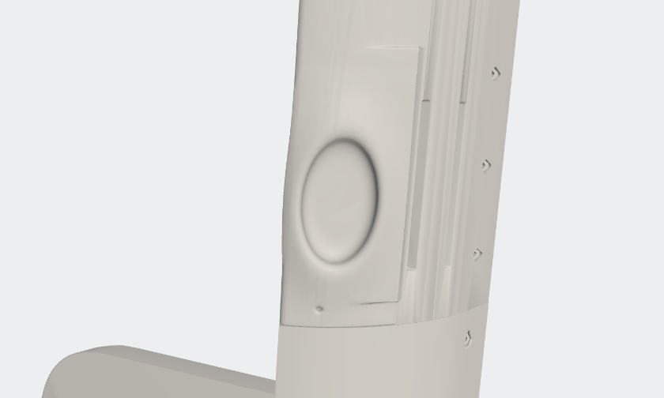
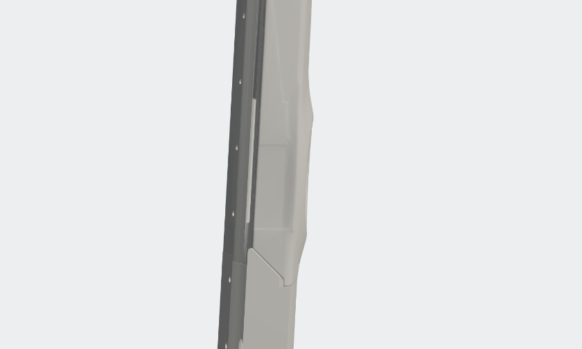


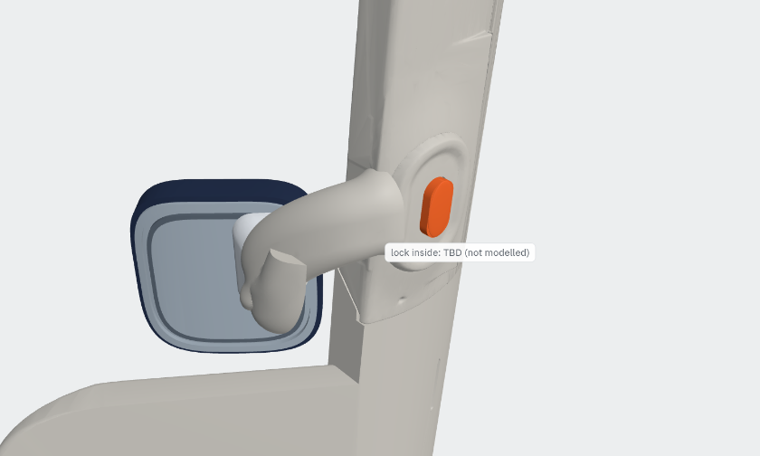
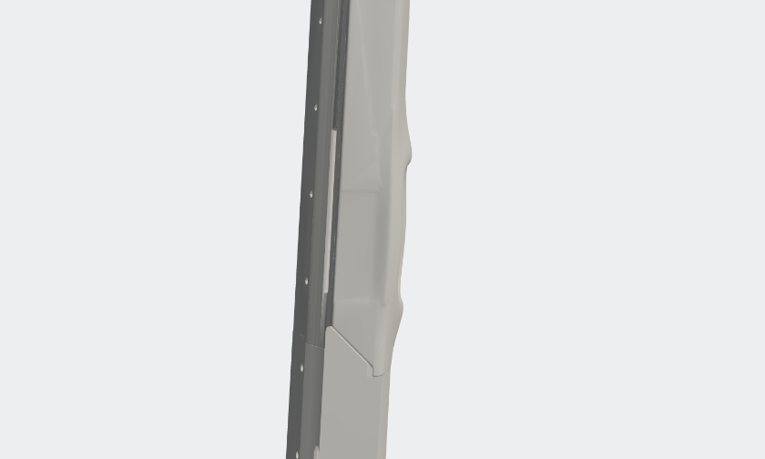

All 27 stills (6 kit-off and 3 kit-on views per shape) are in exhaust/shots/.
2 · How it locks: options (rough 3D)
The plug goes in sideways, so a child's outward lean pulls along the plug's axis. In each option the plastic carries that lean, and the push button only locks. The wing is shown see-through. Blue: the lock parts on the plug. Tan: the matching features in the wing. Black: the optional Ø8 carbon prongs (toggle).
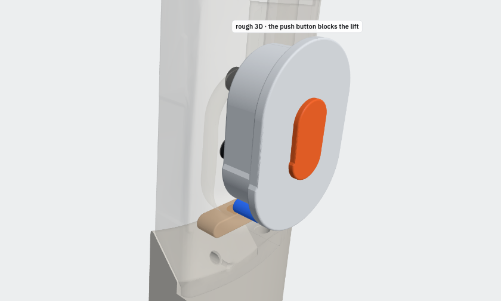
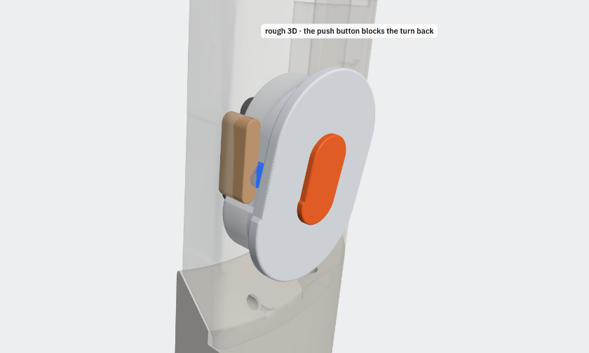

| 1 · Hook-and-drop | 2 · Quarter-turn | 3 · Slanted plug | |
|---|---|---|---|
| Motion | push in sideways, drop 8 mm, click; release: press, lift, pull | push in, turn 20–30°, click; release: press, turn back, pull | push in on the slant, click; release: press, pull |
| One-handed, for a parent | yes; gravity seats it | awkward: the whole arm and pad turn with it (or it needs a separate turning collar) | yes, the simplest motion |
| Lean path (estimate) | hook ledge in shear, ≈ 5+ at a 300 N lean (hand estimate) | two lugs in shear, ≈ 4–5 (hand estimate) | a lean presses it in, but a knock the other way pulls it out against the latch: depends on the angle (not estimated) |
| Looks | same mouth; 8 mm of drop room hidden by the collar | same mouth | the mouth is tilted, reads less calm |
| Print complexity | a ledge inside the pocket (an overhang: needs a 45° roof) | two L-slots inside the pocket (hard to print and clean) | a plain angled pocket |
Look verdicts. F: deliberate and calm. The swell gives the front edge a soft, solid nose in the family of the headrest and pommel. Its weak spot is the open notch when the kit is off. S: the most elegant empty wing, but a bulkier, less resolved part once connected.
Recommendation: hook-and-drop. It works one-handed, gravity holds it home, and the hook carries the lean in plastic. The quarter-turn swings the pad, and the slanted plug only protects against a lean in one direction.
Rough 3D: the plug, hook, lugs, slots and prongs are simple shapes placed by hand to show the idea; strength figures are hand estimates.